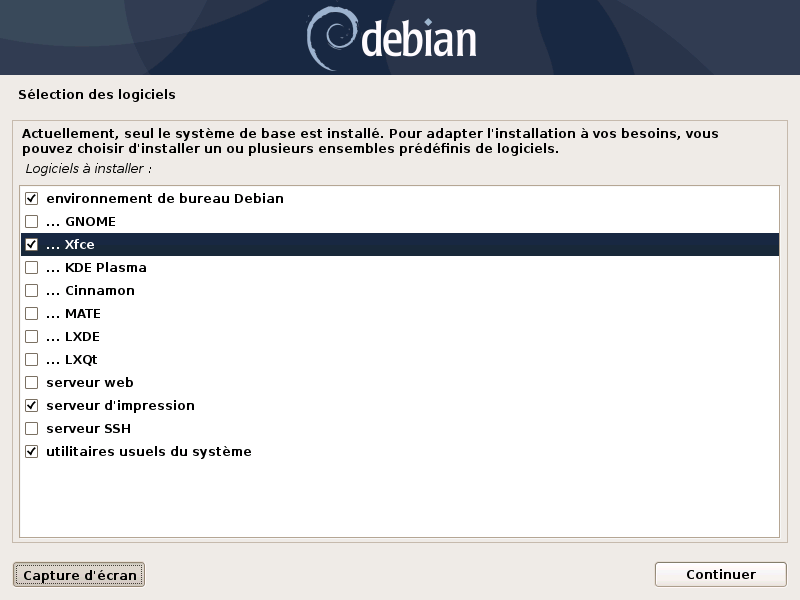

- L'identifiant utilisateur.

Pour ce mémo utiliser, un PC de 64 bits (amd64) ou 32 bits (i386) avec un support d'installation 1 cd ou 1 dvd
ou 1 clé usb.
Avant de commencer, le PC doit être raccordé à internet. Ceci va permettre de télécharger un maximum de paquets lors de l'installation.
Ce mémo est à utiliser dans l'ordre.
Installation stable de Debian GNU/Linux 11 (bullseye) avec le bureau XFCE.
Pour l'installation se référer aux liens ci-dessous.
Lors de l'installation sélectionner les cases comme ci-dessous.
Une fois l'installation terminée redémarrer le PC et laisser faire.
Le bureau Xfce va apparaître.